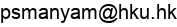
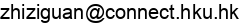
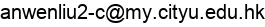
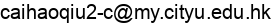
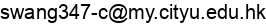

| David J. Srolovitz Materials Theory and Computation Group The University of Hong Kong |
Chair Professor

Dr. David J. Srolovitz
Dean of Engineering
Professor of Mechanical Engineering
Chair of Materials Theory
email:
Google Scholar Profile
Orcid Profile
Department Profile
David Srolovitz is the author of over 500 research papers on materials theory/simulations of defects,
microstructure, deformation, and film growth and has an h-index of 100 and garnered ~36,000 citations.
He is a Member of the US National Academy of Engineering, Fellow of MRS, TMS, ASM, Institute of Physics
and is the winner of the MRS Materials Theory Award. He was a staff member at Exxon Corporate Research
and Los Alamos National Laboratory and the Executive Director of the Institute for High Performance Computing in Singapore.
Previously, a professor at Princeton University (department head, institute director, the University of Pennsylvania (institute director),
the University of Michigan, Yeshiva University (dean), and the City University of Hong Kong (department head, institute director).
He has held faculty positions in Materials Science, Mechanical Engineering, Aerospace Engineering, Computer Science, Physics, Applied Physics and Applied Mathematics.
City University of Hong Kong Collaborators

Dr. Jian Han
Assistant Professor
Materials Science and Engineering
City University of Hong Kong
email:
Google Scholar Profile
Orcid Profile
Department Profile
Dr. Han’s research interests focus on theory, modeling and simulations of materials.
Principally he works on the thermodynamics and kinetics of defects in crystalline materials,
such as point defects, dislocations and interfaces, and the implications on the mechanical properties
of polycrystals. His research approach is multiscale, including molecular statics/dynamics, (kinetic) Monte Carlo, and continuum models.
Research Interests
Research Interests
- Thermodynamics and kinetics of defects; dislocations, interfaces and triple junctions
- Mechanical properties of materials and the underlying mechanisms
- Irradiation damage in polycrystals
- Molecular dynamics; classical/kinetic Monte Carlo simulations; topological framework for local structure analysis
Research Assistant Professors


Dr. Subrahmanyam Pattamatta
email: 
Research: Continuum thermomechanics of phase transformations, DFT, artificial intelligence driven alloy design

Dr. Tongqi Wen
email:
Research: Machine learning potentials, atomistic simulations of defect properties, liquid and glass, AI for science
Researchgate Profile
PhD Students (University of Hong Kong)

Mr. Xiaoguo Gong
email:
Research: Machine learning potentials and grain boundary simulations in fcc metals

Mr. Zhizi Guan
email:  Research: Optical properties of transition metal dichalcogenides

Mr. Zhuoyuan Li
email:
Research: Machine learning potentials and dislocations in bcc metals
PhD Students (City University of Hong Kong)

Ms. Jing Fang
email:
Research: Interfaces in titanium alloys by density functional theory

Mr. Anwen Liu
email: 
Research: Molecular dynamics and kinetic Monte Carlo simulations of dislocations

Mr. Caihao Qiu
email: 
Research: Interface migration and grain growth mediated by disconnections; sharp and diffuse interface models

Mr. Dongsong Tao
email:

Research: Mesoscale modeling of interfaces

Ms. Siqi Wang
email: 
Research: Atomistic simulations of interfaces in tianium

Mr. Zhaowei Wang
email:
Research: Mechanical and thermodynamical properties of High-entropy alloys

Mr. Jinxin Yu
email:
Research: Mesoscale simulation of interface and dislocations; Crystal plasticity
PhD Students (University of Pennsylvania)
Mr. Simeon Ristic
email:
Research:
Ms. Larissa Woryk
email:
Research:
Exchange and visiting scholars
Mr/Ms. Avatar X
email:
Research: